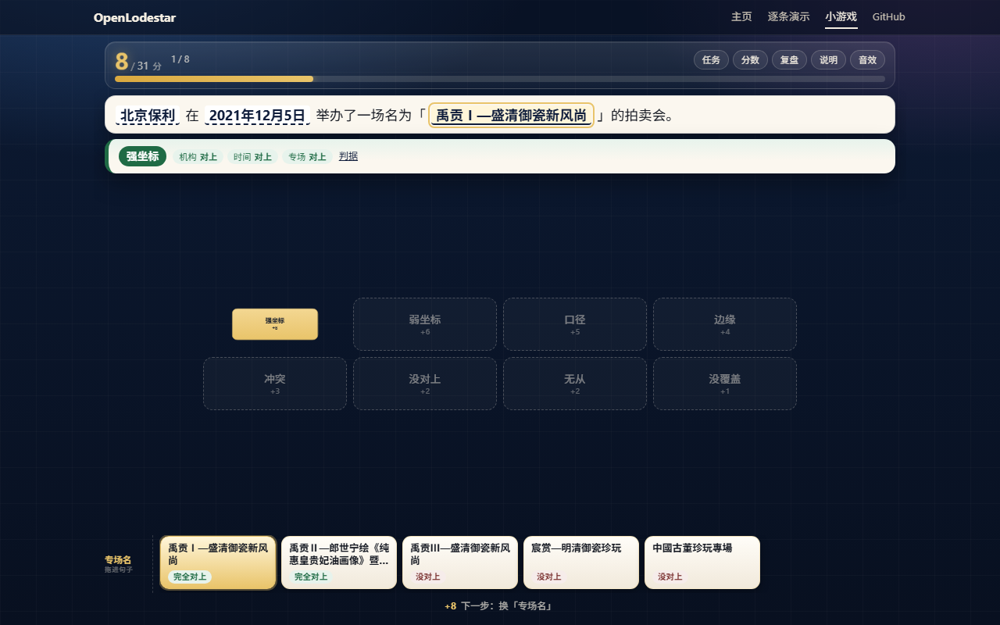

复盘 · 一个小游戏的分值结构事故
最省力的打法，恰好就是最高档
「证据分拣」第一版上线后，盲测里有一批人根本没读规则，只按“两边字面一样就收、其余全放走”打，稳定拿到最高档。问题不在画面、不在手感，在分值结构的数学。
一句话结论：当“不读内容也能拿最高档”的策略在数学上严格优于“读懂再判”，这个交互就已经没有内容价值了。改文案、调时长、放大按钮都只是在给一个错误的最优解做美化。
一、症状：盲测者不看原理，反而打得最好
第一版的意图是让人分清六种判据：完全对上、口径相容、边缘相容、冲突候选、没对上、无从判断。设计上希望玩家读器物卡、读待判的说法，再决定收下还是放走。
盲测结果正好相反。几位测试者给出的打法可以压缩成一句话：
他们不需要知道“口径相容”和“边缘相容”差在哪，也不需要判断冲突候选指向哪个值。按这句话打，两件器物二十拍拿 146 分——正好是这一版标称的“满分”，而 S 线只要求 131。认真读、试着把旁证也收下的人拿 139 分，分数更低，但同样是 S。也就是说，多读的那一眼不但没有回报，还要倒扣几分。
这不是玩家钻空子。他们只是找到了这个分值表里真正的最优解——而那个最优解与设计意图相反。
二、根因：收下旁证是一步数学上的劣着
第一版的计分可以简化成下面这张表。关键不在单张牌给多少分，而在连击会不会继续涨：
| 这一拍 | 收下 | 放走 |
|---|---|---|
| 完全对上 | +10 × 连击倍率，连击 +1 | 0，连击归零 |
| 口径相容 / 边缘相容 | +3 / +1，连击冻结 | +2，连击 +1 |
| 冲突候选 / 没对上 | 0，掉一颗心，连击归零 | +2，连击 +1 |
| 无从判断 | 0，连击冻结 | +1，连击 +1 |
连击倍率是阶梯式的：连击 0–2 是 ×1，3–5 是 ×1.5，6–8 是 ×2，9–11 是 ×2.5，12 起封顶 ×3。于是“收下一张旁证”看起来白拿 3 分，实际付出的是把整条连击按住不动——而放走它不但有 2 分，还让下一次命中更早进入更高的倍率档。
把账算到具体一拍。假设当前连击是 8，倍率 ×2：
放走立刻多 2 分，下一拍还多 5 分，而且不掉心、不吃任何惩罚。只要后面还有命中，“收下旁证”就被“放走旁证”严格支配——唯一例外是全场最后几拍，那时后面不再有命中，收下 +3 反而多 1 分。把整局按真正的最优解算一遍是 148 分（字面打法 146），差距小到不改变档位，但足以说明“读不读”在这张表里几乎没有分量。冲突候选和没对上更不用说：收下 0 分、掉一颗心、断连击，放走却是 +2 并继续涨连击。
更糟的是，这一版的构建脚本把“满分”直接定义成了字面打法。生成数据时算 perfectScore 的那段代码就是“完全对上就收、其余全放走”，逐拍累加得到 146；S 线再按满分的 90% 取整，得到 131。也就是说，最高档的分母本身就是最笨打法能拿到的分数——只要字面比对做得准，S 档在数学上就一定是你的。
六种判据里，四种在最优策略下根本不参与决策。游戏嘴上让人分辨“相容”和“对上”，分值却告诉玩家：别分辨，放走就对了。最高档因此不再证明“读懂了”，只证明“会按字面做字符串比较”。
三、为什么修了很多轮细节，仍然不好玩
那段时间的改动几乎全在体验层：换词小游戏前后修了五轮——减字（首屏可见文字从 376 字降到 209 字）、居中开箱、点击爽感、把换词改成贴着词的浮层、调行距与按钮尺寸；分拣这一版也调过判定文字的停留时长（305 毫秒改到 1.2 秒）、按钮大小与首屏空白。每一轮都让页面更顺，但没有一轮回答“最高档到底需不需要读懂”。
这些改动本身没有错，页面确实更好用了，可它们一个都没有碰到那行式子：
只要这行式子还成立，手感越好，玩家越快地把这套错误策略执行完；动效越顺，错误策略越像“正确玩法”。修细节修的是症状，症状背后是一个稳定占优的解。
后来回看，真正该停下来的信号很清楚：
- 盲测里“不读规则”的人稳定拿到最高档。这不是难度问题，是激励方向反了。
- 最优策略可以用一句完全不涉及内容的话说完。如果这句话成立，游戏考的就不是它声称要考的东西。
- 认真读的人反而更容易掉档。当“更懂”变成劣势，继续调手感只会让错误更舒服。
这三个信号出现任意一个，就该停下来重写分值表，而不是再改一轮按钮大小。
四、重做时做对了什么：把“必须读懂”写成构建期的不等式
重做没有靠文案劝玩家“要认真读”，而是改了分值关系，让错误打法在数学上不再占优：
- 中段收旁证要付代价。收下相容/边缘仍然给固定分，但会把连击清零，不再“冻结”。想保住连击，就得先把旁证放走。
- 旁证只在最后三拍翻倍。每件器物的收尾窗口里，收旁证的分值翻倍；窗口里放走，等于把翻倍的分白丢。于是“什么时候收旁证”变成真取舍，而不是一律放走。
- 误收冲突/没对上更贵。除了掉心、断连击，还倒扣 6 分；S 档另要求整局没有这种误收。想拿最高档，必须真的分清“指向别的值”和“只是说法不同”。
更重要的是，这些关系不是写在说明里就算数，而是在构建数据时逐牌序验算。只要有一条不成立，构建直接失败：
这几条不等式被写进了数据构建脚本：字面打法只要摸到 S 线，构建就报错；稳健打法不等于理论最高分，也报错；S 线严到“漏一条就掉档”或松到“漏两条还是 S”，同样报错。于是“必须读懂才能拿最高档”不再是一句设计口号，而是每次构建都会重新验算的硬约束。
错误打法没有变笨，是它在数学上不再是最优。这才是重做与“再调一版手感”的区别。
五、可迁移的结论
一个小游戏、一个交互设计的最高档，能不能被“不看规则的人”用更笨的策略拿到，是它有没有内容价值的判据。
把这个判据带去做别的交互，可以落成三个可执行的问题：
- 把最优策略写成一句话。如果这句话不涉及你想教的内容，说明内容没有进入激励结构。
- 让“更懂”在分数上严格占优。不是高一点，而是严格占优；否则玩家没有理由多读那一眼。
- 把这条关系做成构建期断言。文案会漂、手感会变，只有每次构建都验算的不等式能防止它悄悄退回去。
附：被删掉的旧换词小游戏留档
仓库里还曾有一版完全不同的玩法：把一句话拆成机构、时间、专场三个槽位，玩家自己换词，换完开宝箱领分，收齐八种结论通关。它和现在的限时分拣不是同一条玩法线，产品最后只保留一条，旧页连同它的脚本、数据和测试一起删除了。下面两张图留档，说明那一版长什么样。

留档的目的不是怀念这一版，而是记住它的教训：一个演示页只要还在维护，就会持续消耗测试、文档与导航的注意力；当它服务的那条玩法线被取代，正确动作是删掉并留下可讲的经验，而不是让两套玩法长期并排。
回到证据分拣，自己打一局 →